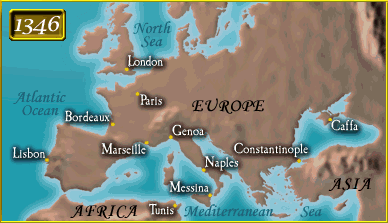

Q. Where did the plague strike, and when? In 1346, we heard rumors of a great pestilence in the Orient. Allow me to quote one account:
Naturally, we in Europe assumed this distant plague could not affect us, until ships manned by dying sailors began arriving at Italian ports. In a Flemish chronicle, I read the following:
In this way the contamination spread, and within the next two years it passed over all the land, even to the far North. |